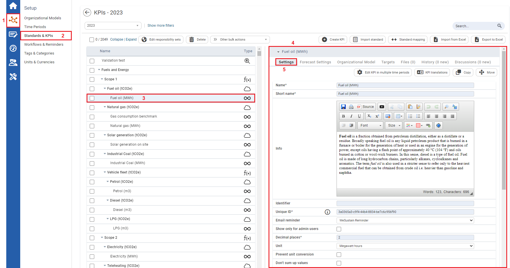
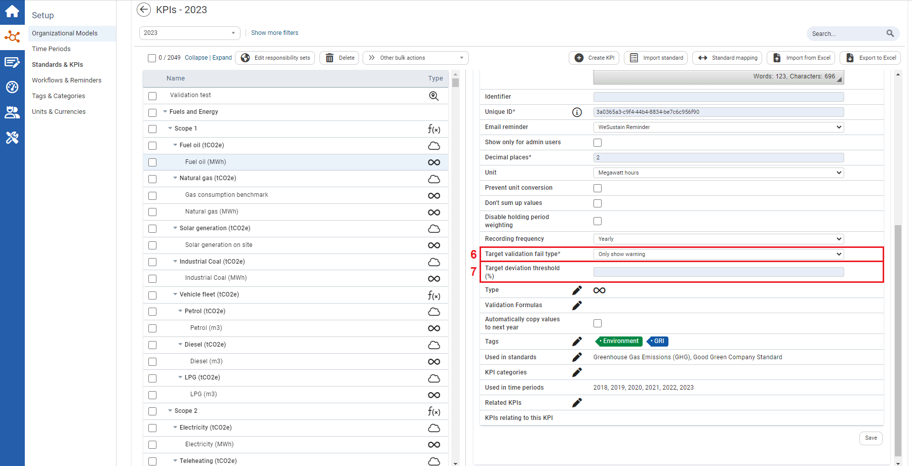

Setting a Target Validation Fail Type and a Target Deviation Threshold (%)
Setting a Target Validation Fail Type and a Target Deviation Threshold (%) allows attention to be brought to user in terms of deviations that are greater than expected and allows users to reassess their action plans. This will allow users to make changes as needed so that the next target value is reached or even to change target values to be more realistic.
To Set a Target Validation Fail Type and a Target Deviation Threshold (%):

| 1 | On the left navigation panel, click Setup. |
| 2 | Click Standards & KPIs. |
| 3 | Select either a numeric or formula KPI. |
| 4 | Information on the KPI will display to the right. |
| 5 | Once a Target has been edited for a KPI (see Editing Targets using Absolute Target Value, and Editing Targets using Relative Target Value), in the KPI information section to the right, click the Settings tab. |

| 6 | Scroll down to Target validation fail type* dropdown textbox and select a system response that you want users to see if the difference between the target value and actual value exceeds the Target Deviation Threshold (%). |
| 7 | In the Target deviation Threshold (%) input a percentage that you find reasonable for the difference to between the target value and actual value. |